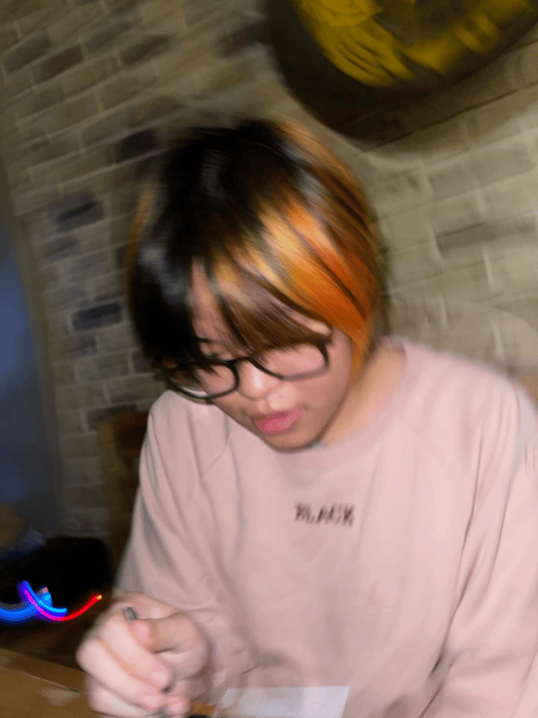

My name is Feliz "Theo" S. Baja (Preferably called "Theo").
18 years old and a student attending CIIT Senior High School, currently a programming student (´◡`)
I previously attended Colegio de San Lorenzo, Acelina School Inc. Montessori, and APEC Dasmariñas.
I like fashion, doodling, and self-expression. I have experience with editing videos.
Achievements:
Grade 4 - Colegio De San Lorenzo - Class Top 2.5
Grade 8 - Acelina School Inc. Concern for People
Grade 8 - Acelina School Inc. Exemplary Professionalism
Grade 8 - Acelina School Inc. Academic Recognition - With Honors